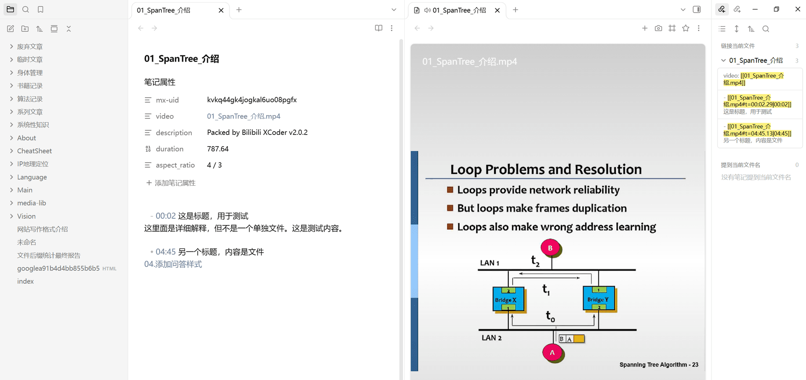

视频时间点笔记功能实现总结
1. 编辑方式
点击编辑之后，会用 Obsidian 打开。Obsidian 使用 Media Extended 插件来管理视频时间点笔记，非常好的插件。
在 Obsidian 中编辑的情况如下。视频上面那几个按钮可以快速定位笔记之类的，挺好的一个插件：

在浏览器中的情况如下。左侧上方是视频，左侧下方是笔记概览，右侧是笔记的具体内容，中间可以拉动分割线调整宽度：
2. 文件组织方式
Media Extended 插件的组织方式如下。它会在主目录里加一个 media-lib 文件夹：
D:/Blog/done/
├── media-lib/
│ ├── index.base
│ └── 01_SpanTree_介绍.md
├── 系统性知识/Computer-Network/02.DataLink_Layer/04.SpanTree/
│ └── 01_SpanTree_介绍.mp4
media-lib 文件夹里面就是笔记文件，如下所示：
---
mx-uid: kvkq44gk4jogkal6uo08pgfx
video: "[[01_SpanTree_介绍.mp4]]"
duration: 787.64
aspect_ratio: 4 / 3
---
- [[01_SpanTree_介绍.mp4#t=00:02.29|00:02]] 标题一
这里面是详细解释，但不是一个单独文件
- [[01_SpanTree_介绍.mp4#t=00:03.98|00:03]] 标题二
[[04.添加问答样式]]
3. 解析细节
这部分由 media_notes.py 实现。
3.1 判断某个视频有没有笔记
很简单，就扫描 media-lib 文件夹下面的所有笔记文件，然后判断有没有 mx-uid 和 video 字段。其中 mx-uid 是 Media Extended 插件生成的唯一 ID，我们直接拿来用了，第 4 节会详细介绍它的作用。
mx-uid: kvkq44gk4jogkal6uo08pgfx
video: "[[01_SpanTree_介绍.mp4]]"
随后把 [[01_SpanTree_介绍.mp4]] 解析为实际视频路径：
| 链接形式 | 查找方式 |
|---|---|
| 绝对路径 | 检查该路径是否存在并允许处理 |
| 带目录的路径 | 分别检查以 done 根目录、以当前笔记目录为基准的路径；有多个有效目标则报歧义 |
| 只有文件名 | 优先查笔记所在目录；本目录没有时，查全局文件名索引中的唯一目标 |
找到后，内存中会保存两种映射：
notes[笔记绝对路径] → MediaNote 记录
by_video[视频绝对路径] → 同一条 MediaNote 记录
所以，检查某个已解析的视频有没有媒体笔记，就是查询 by_video。
3.2 识别时间点
无非就是解析下面的格式，得到标题、时间、正文等：
- [[01_SpanTree_介绍.mp4#t=00:02.29|00:02]] 标题一
这里是解释
- [[01_SpanTree_介绍.mp4#t=00:03.98|00:03]] 标题二
[[04.添加问答样式]]
会得到如下结构（省略概述和警告）：
[
{'time': 2.29, 'title': '标题一', 'body': '这里是解释'},
{'time': 3.98, 'title': '标题二', 'body': '[[04.添加问答样式]]'},
]
3.3 变成网页第一步：转 Markdown 文件
前面的解析已经得到时间、标题、正文。接下来，render() 把它们写进生成文件，大致如下，省略无关字段：
---
media_notes:
entries:
- time: 2.29
title: 标题一
- time: 3.98
title: 标题二
---
<!--blog-media-note-0-->
这里是解释，**这句话是重点**。
<!--blog-media-note-end-0-->
<!--blog-media-note-1-->
**引用：** [About/04.添加问答样式.md](D:/Blog/done/About/04.添加问答样式.md)
# 添加问答样式
如图所示，样式如下：

……
<!--blog-media-note-end-1-->
比如视频叫 test.mp4，最后生成的文章就是 test.mp4.md。其实这一步即使没有笔记，也会生成这个文件，我们现在做的只是把一些笔记内容写进去。
视频如果没有笔记，就会生成如下内容（实际并不是这样，比如视频链接不是这种写法。不过这不在讨论范围内，这样写只是为了方便理解）：
# 没有笔记的视频文件

3.4 变成网页第二步：转网页
然后 mkdocs 站点构建器开始把这份 Markdown 变成网页。
首先用的是 resource-content.html 模板。这个模板会判断 Markdown 头部有没有 media_notes 字段，有的话再进一步处理。
{% set rendered = namespace(content=page.content) %}
<!-- 这里是处理资源卡片，这个是其他设计，不在本文讨论范围内 -->
{% for resource in page.meta.resource_cards | d([]) %}
{% set card %}{% include "partials/resource-card.html" %}{% endset %}
{% set rendered.content = rendered.content | replace(resource.marker, card) %}
{% endfor %}
<!-- 这里是关键，如果有 media_notes，那么会调用 media-notes.html 模板 -->
{% if page.meta.media_notes %}{% include "partials/media-notes.html" %}{% endif %}
{{ rendered.content | safe }}
有 media_notes 字段时，就调用 media-notes.html。它的内容如下：
{# 1. 页面开头：打开总容器、左栏和播放器容器。 #}
{% set opening %}
<div class="blog-media-notes" data-media-notes="{{ notes.uid }}">
<aside class="blog-media-left">
<div class="blog-media-player">
{% endset %}
{# 2. 播放器之后：左侧目录和本地入口，然后打开右侧详情区。 #}
{% set middle %}
<!-- ... 这里忽略 ... -->
{% endset %}
{# 3. 页面结尾：翻页按钮、状态提示，关闭右栏和总容器。 #}
{% set closing %}
<!-- ... 这里忽略 ... -->
{% endset %}
{# 将三个布局片段放入正文的对应位置。播放器 HTML 已由资源模板插入。 #}
{% set rendered.content = rendered.content
| replace('<!--blog-media-start-->', opening)
| replace('<!--blog-media-player-end-->', middle)
| replace('<!--blog-media-end-->', closing)
%}
{# 为每条已渲染的笔记正文加上详情容器和标题，供前端切换显示。 #}
{% for entry in notes.entries %}
{% set panel %}
<section
class="blog-media-detail"
id="media-note-{{ loop.index0 }}"
aria-label="{{ entry.title }}"
>
<h2>{{ entry.title }}</h2>
{% endset %}
{% set start_marker = '<!--blog-media-note-' ~ loop.index0 ~ '-->' %}
{% set end_marker = '<!--blog-media-note-end-' ~ loop.index0 ~ '-->' %}
{% set rendered.content = rendered.content
| replace(start_marker, panel)
| replace(end_marker, '</section>')
%}
{% endfor %}
其实最关键的一点，就是把 Markdown 里面的注释，也就是 blog-media-note，直接替换成 <section> 这类 HTML。
最终 HTML 的结构大致是：
<!-- 左侧目录 -->
<button>00:02.29</button>
<button>标题一</button>
<!-- 右侧详情 -->
<section id="media-note-0">
<h2>标题一</h2>
<p>这里是解释，<strong>这句话是重点</strong>。</p>
</section>
播放器、左右布局、拖动分界线、上一条和下一条，也都由模板和样式组合而成。
4. 持续维护
剩下的就是持续维护，即视频和笔记以后改名或移动之后，系统怎样继续记住它们的关系。
首次构建时，记下一份关联记录
系统从笔记头部找到视频后，会把结果保存到 media_notes.json 这个文件中。
{
"kvkq44gk4jogkal6uo08pgfx": {
"note_path": "media-lib/01_SpanTree_介绍.md",
"source_link": "01_SpanTree_介绍.mp4",
"video_path": "系统性知识/Computer-Network/02.DataLink_Layer/04.SpanTree/01_SpanTree_介绍.mp4",
"video_sha256": "f1d745dc2a958759ff3b3c317c60a9bb876f7dc282969d284aaaf620a34e3711",
"size": 22175522,
"mtime_ns": 1694318621397934300,
"dependencies": [
"About/04.添加问答样式.md",
"About/images/20260427180832.png",
"media-lib/01_SpanTree_介绍.md"
]
}
}
其中的键就是 mx-uid，是 Media Extended 给每个笔记生成的 ID，用来回答：这是哪一份笔记？
而 video_sha256 用来回答：视频内容和之前是否相同？只要视频字节没有改变，Hash 就保持一致。
视频改名后，怎么找回来
运行 UpdateBlog 时，正如第 3 节所说，脚本会扫描 media-lib 文件夹下面的所有笔记文件。每个文件如果顺利，会根据 video 字段找到原来的文件。
mx-uid: kvkq44gk4jogkal6uo08pgfx
video: "[[01_SpanTree_介绍.mp4]]"
假设把视频从 01_SpanTree_介绍.mp4 改成 生成树介绍.mp4，笔记里仍写着旧名字，按旧名字就找不到文件，于是流程是：
按笔记中的旧名字查找
↓ 找不到
根据 mx-uid 在 media_notes.json 中读取之前的关联记录
↓
在允许扫描的视频中，先筛选文件大小相同的候选
↓
比较候选视频与旧记录的 Hash
↓ 唯一匹配
找回视频，使用新路径生成学习页并更新登记表
找回视频后，修复笔记里的链接
上面这一步只找回视频，用来生成学习页并更新登记表，不会改笔记原文。笔记里的旧链接要另外修复。在 scripts/web 下运行：
python media_notes.py --repair-links
python media_notes.py --repair-links --apply
第一条只预览，第二条备份后写回原文。代码块里的链接不会改。
假设视频改名了，程序通过 Hash 找到了它，但笔记仍写着旧名称：
---
video: "[[01_SpanTree_介绍.mp4]]"
---
- [[01_SpanTree_介绍.mp4#t=00:02.29|00:02]] 标题一
这里是笔记正文。
假设找回的视频位于 课程/生成树介绍.mp4，修复后的原文就是：
---
video: "[[课程/生成树介绍.mp4]]"
---
- [[课程/生成树介绍.mp4#t=00:02.29|00:02]] 标题一
这里是笔记正文。